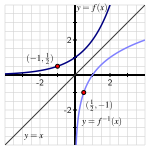
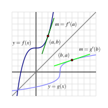

What is the derivative of the natural logarithm function?
If \(g\) is the inverse of a differentiable function \(f\text{,}\) how is \(g'\) computed in terms of \(f\text{,}\)\(f'\text{,}\) and \(g\text{?}\)
Much of mathematics centers on the notion of a function. Indeed, throughout our study of calculus, we are investigating the behavior of functions, with particular emphasis on how fast the output of the function changes in response to changes in the input. Because each function represents a process, a natural question to ask is whether or not the particular process can be reversed. That is, if we know the output that results from the function, can we determine the input that led to it? And if we know how fast a particular process is changing, can we determine how fast the inverse process is changing?
One of the most important functions in all of mathematics is the natural exponential function \(f(x) = e^x\text{.}\) Its inverse, the natural logarithm, \(g(x) = \ln(x)\text{,}\) is similarly important. One of our goals in this section is to learn how to differentiate the logarithm function. First, we review some of the basic concepts surrounding functions and their inverses (see Subsection 1.2.5).
Warm-Up2.9.1.
The equation \(y = \frac{5}{9}(x-32)\) relates a temperature given in \(x\) degrees Fahrenheit to the corresponding temperature \(y\) measured in degrees Celsius.
Solve the equation \(y = \frac{5}{9}(x-32)\) for \(x\) to write \(x\) (Fahrenheit temperature) in terms of \(y\) (Celsius temperature).
Let \(C(x) = \frac{5}{9}(x-32)\) be the function that takes a Fahrenheit temperature as input and produces the Celsius temperature as output. In addition, let \(F(y)\) be the function that converts a temperature given in \(y\) degrees Celsius to the temperature \(F(y)\) measured in degrees Fahrenheit. Use your work in (a) to write a formula for \(F(y)\text{.}\)
Next consider the new function defined by \(p(x) = F(C(x))\text{.}\) Use the formulas for \(F\) and \(C\) to determine an expression for \(p(x)\) and simplify this expression as much as possible. What do you observe?
Now, let \(r(y) = C(F(y))\text{.}\) Use the formulas for \(F\) and \(C\) to determine an expression for \(r(y)\) and simplify this expression as much as possible. What do you observe?
What is the value of \(C'(x)\text{?}\) of \(F'(y)\text{?}\) How do these values appear to be related?
Subsection2.9.1Basic facts about inverse functions
A function \(f\) is a rule that associates each element in its domain to one and only one element in its range . If the relationship \(g\) comprised of all points of the form \((f(x),x)\) is still a function, then we say that \(g\) is the inverse of \(f\text{.}\)
We often use the notation \(f^{-1}\) (read “\(f\)-inverse”) to denote the inverse of \(f\text{.}\) The inverse function undoes the work of \(f\text{.}\) Indeed, if \(y = f(x)\text{,}\) then
Thus, the equations \(y = f(x)\) and \(x = f^{-1}(y)\) say the same thing. The only difference between the two equations is one of perspective — one is solved for \(x\text{,}\) while the other is solved for \(y\text{.}\)
Here we briefly remind ourselves of some key facts about inverse functions.
Note2.9.1.
For a function \(f\text{,}\)
provided \(f^{-1}\) exists, the domain of \(f^{-1}\) is the range of \(f\text{,}\) and the range of \(f^{-1}\) is the domain of \(f\text{;}\)
\(f^{-1}(f(x)) = x\) for every \(x\) in the domain of \(f\) and \(f(f^{-1}(y)) = y\) for every \(y\) in the range of \(f\text{;}\)
\(y = f(x)\) if and only if \(x = f^{-1}(y)\text{.}\)
The last fact reveals a special relationship between the graphs of \(f\) and \(f^{-1}\text{.}\) If a point \((x,y)\) that lies on the graph of \(y = f(x)\text{,}\) then it is also true that \(x = f^{-1}(y)\text{,}\) which means that the point \((y,x)\) lies on the graph of \(f^{-1}\text{.}\) This shows us that the graphs of \(f\) and \(f^{-1}\) are the reflections of each other across the line \(y = x\text{,}\) because this reflection is precisely the geometric action that swaps the coordinates in an ordered pair. In Figure 2.9.2, we see this illustrated by the function \(y = f(x) = 2^x\) and its inverse, with the points \((-1,\frac{1}{2})\) and \((\frac{1}{2},-1)\) highlighting the reflection of the curves across \(y = x\text{.}\)

Figure2.9.2.A graph of a function \(y = f(x)\) along with its inverse, \(y = f^{-1}(x)\text{.}\)
To close our review of important facts about inverses, we recall that the natural exponential function \(y = f(x) = e^x\) has an inverse function, namely the natural logarithm, \(x = f^{-1}(y) = \ln(y)\text{.}\) Thus, writing \(y = e^x\) is interchangeable with \(x = \ln(y)\text{,}\) plus \(\ln(e^x) = x\) for every real number \(x\) and \(e^{\ln(y)} = y\) for every positive real number \(y\text{.}\)
Subsection2.9.2The derivative of the natural logarithm function
In what follows, we find a formula for the derivative of \(g(x) = \ln(x)\text{.}\) To do so, we take advantage of the fact that we know the derivative of the natural exponential function, the inverse of \(g\text{.}\) In particular, we know that writing \(g(x) = \ln(x)\) is equivalent to writing \(e^{g(x)} = x\text{.}\) Now we differentiate both sides of this equation and observe that
For all positive real numbers \(x\text{,}\)\(\frac{d}{dx}[\ln(x)] = \frac{1}{x}\text{.}\)
This rule for the natural logarithm function now joins our list of basic derivative rules. Note that this rule applies only to positive values of \(x\text{,}\) as these are the only values for which \(\ln(x)\) is defined.
Also notice that for the first time in our work, differentiating a basic function of a particular type has led to a function of a very different nature: the derivative of the natural logarithm is not another logarithm, nor even an exponential function, but rather a rational one.
Derivatives of logarithms may now be computed in concert with all of the rules known to date. For instance, if \(f(t) = \ln(t^2 + 1)\text{,}\) then by the chain rule, \(f'(t) = \frac{1}{t^2 + 1} \cdot 2t\text{.}\)
There are interesting connections between the graphs of \(f(x) = e^x\) and \(f^{-1}(x) = \ln(x)\text{.}\)
In Figure 2.9.3, we are reminded that since the natural exponential function has the property that its derivative is itself, the slope of the tangent to \(y = e^x\) is equal to the height of the curve at that point. For instance, at the point \(A = (\ln(0.5), 0.5)\text{,}\) the slope of the tangent line is \(m_A = 0.5\text{,}\) and at \(B = (\ln(5), 5)\text{,}\) the tangent line’s slope is \(m_B = 5\text{.}\)
Figure2.9.3.A graph of the function \(y = e^x\) along with its inverse, \(y = \ln(x)\text{,}\) where both functions are viewed using the input variable \(x\text{.}\)
At the corresponding points \(A'\) and \(B'\) on the graph of the natural logarithm function (which come from reflecting \(A\) and \(B\) across the line \(y = x\)), we know that the slope of the tangent line is the reciprocal of the \(x\)-coordinate of the point (since \(\frac{d}{dx}[\ln(x)] = \frac{1}{x}\)). Thus, at \(A' = (0.5, \ln(0.5))\text{,}\) we have \(m_{A'} = \frac{1}{0.5} = 2\text{,}\) and at \(B' = (5, \ln(5))\text{,}\)\(m_{B'} = \frac{1}{5}\text{.}\)
In particular, we observe that \(m_{A'} = \frac{1}{m_A}\) and \(m_{B'} = \frac{1}{m_B}\text{.}\) This is not a coincidence, but in fact holds for any curve \(y = f(x)\) and its inverse, provided the inverse exists. This is due to the reflection across \(y = x\text{.}\) It changes the roles of \(x\) and \(y\text{,}\) thus reversing the rise and run, so the slope of the inverse function at the reflected point is the reciprocal of the slope of the original function.
Activity2.9.2.
For each function given below, find its derivative.
\(\displaystyle h(x) = x^2\ln(x)\)
\(\displaystyle p(t) = \frac{\ln(t)}{e^t + 1}\)
\(\displaystyle s(y) = \ln(\cos(y) + 2)\)
\(\displaystyle z(x) = \tan(\ln(x))\)
\(\displaystyle m(z) = \ln(\ln(z))\)
Subsection2.9.3The link between the derivative of a function and the derivative of its inverse
In Figure 2.9.3, we saw an interesting relationship between the slopes of tangent lines to the natural exponential and natural logarithm functions at points reflected across the line \(y = x\text{.}\) In particular, we observed that at the point \((\ln(2), 2)\) on the graph of \(f(x) = e^x\text{,}\) the slope of the tangent line is \(f'(\ln(2)) = 2\text{,}\) while at the corresponding point \((2, \ln(2))\) on the graph of \(f^{-1}(x) = \ln(x)\text{,}\) the slope of the tangent line is \((f^{-1})'(2) = \frac{1}{2}\text{,}\) which is the reciprocal of \(f'(\ln(2))\text{.}\)
That the two corresponding tangent lines have reciprocal slopes is not a coincidence. If \(f\) and \(g\) are differentiable inverse functions, then \(y = f(x)\) if and only if \(x = g(y)\text{,}\) then\(f(g(x)) = x\) for every \(x\) in the domain of \(f^{-1}\text{.}\) Differentiating both sides of this equation, we have
Solving for \(g'(x)\text{,}\) we have \(g'(x) = \frac{1}{f'(g(x))}\text{.}\) Here we see that the slope of the tangent line to the inverse function \(g\) at the point \((x,g(x))\) is precisely the reciprocal of the slope of the tangent line to the original function \(f\) at the point \((g(x),f(g(x))) = (g(x),x)\text{.}\)

Figure2.9.4.A graph of function \(y = f(x)\) along with its inverse, \(y = g(x) = f^{-1}(x)\text{.}\) Observe that the slopes of the two tangent lines are reciprocals of one another.
To see this more clearly, consider the graph of the function \(y = f(x)\) shown in Figure 2.9.4, along with its inverse \(y = g(x)\text{.}\) Given a point \((a,b)\) that lies on the graph of \(f\text{,}\) we know that \((b,a)\) lies on the graph of \(g\text{;}\) because \(f(a) = b\) and \(g(b) = a\text{.}\) Now, applying the rule that \(g'(x) = 1/f'(g(x))\) to the value \(x = b\text{,}\) we have
which is precisely what we see in the figure: the slope of the tangent line to \(g\) at \((b,a)\) is the reciprocal of the slope of the tangent line to \(f\) at \((a,b)\text{,}\) since these two lines are reflections of one another across the line \(y = x\text{.}\)
Derivative of an inverse function.
Suppose that \(f\) is a differentiable function with inverse \(g\) and that \((a,b)\) is a point that lies on the graph of \(f\) at which \(f'(a) \ne 0\text{.}\) Then
More generally, for any \(x\) in the domain of \(g'\text{,}\) we have \(g'(x) = 1/f'(g(x))\text{.}\)
The rule we derived for \(\ln(x)\) is just a specific example of this general property of the derivative of an inverse function. Indeed, with \(g(x) = \ln(x)\) and \(f(x) = e^x\text{,}\) it follows that
What is the derivative of the natural logarithm function?
Answer.
For all positive real numbers \(x\text{,}\)\(\frac{d}{dx}[\ln(x)] = \frac{1}{x}\text{.}\)
Question2.9.6.
If \(g\) is the inverse of a differentiable function \(f\text{,}\) how is \(g'\) computed in terms of \(f\text{,}\)\(f'\text{,}\) and \(g\text{?}\)
Answer.
If \(g\) is the inverse of a differentiable function \(f\text{,}\) then for any point \(x\) in the domain of \(g'\text{,}\)\(g'(x) = \frac{1}{f'(g(x))}\text{.}\)
Exercises2.9.5Exercises
1.
Determine the general rule for derivatives of logarithmic functions. That is, let \(b\gt 0\text{,}\)\(b \neq 1\text{,}\) and \(\ell(x) = \log_b(x)\text{.}\) Determine \(\ell'(x)\text{.}\)
HINT: Let \(f(x)=b^x\text{.}\) Then \(f^{-1}(x) = \ell(x) = \log_b(x)\text{.}\)
2.
Consider the graph of \(y = f(x)\) provided in Figure 2.9.7 and use it to answer the following questions.
Use the provided graph to estimate the value of \(f'(1)\text{.}\)
Sketch an approximate graph of \(y = f^{-1}(x)\text{.}\) Label at least three distinct points on the graph that correspond to three points on the graph of \(f\text{.}\)
Based on your work in (a), what is the value of \((f^{-1})'(-1)\text{?}\) Why?
Figure2.9.7.A function \(y = f(x)\)
3.
Let \(f(x) = \frac{1}{4}x^3 + 4\text{.}\)
Sketch a graph of \(y = f(x)\) and explain why \(f\) is an invertible function.
Let \(g\) be the inverse of \(f\) and determine a formula for \(g\text{.}\)
Compute \(f'(x)\text{,}\)\(g'(x)\text{,}\)\(f'(2)\text{,}\) and \(g'(6)\text{.}\) What is the special relationship between \(f'(2)\) and \(g'(6)\text{?}\) Why?
4.
Let \(h(x) = x + \sin(x)\text{.}\)
Use technology to sketch a graph of \(y = h(x)\) and explain why \(h\) must be invertible.
Explain why it does not appear to be algebraically possible to determine a formula for \(h^{-1}\text{.}\)
Observe that the point \((\frac{\pi}{2}, \frac{\pi}{2} + 1)\) lies on the graph of \(y = h(x)\text{.}\) Determine the value of \((h^{-1})'\left(\frac{\pi}{2} + 1\right)\text{.}\)